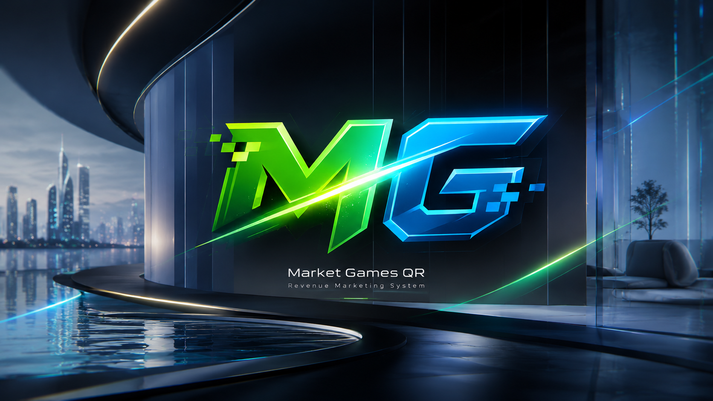
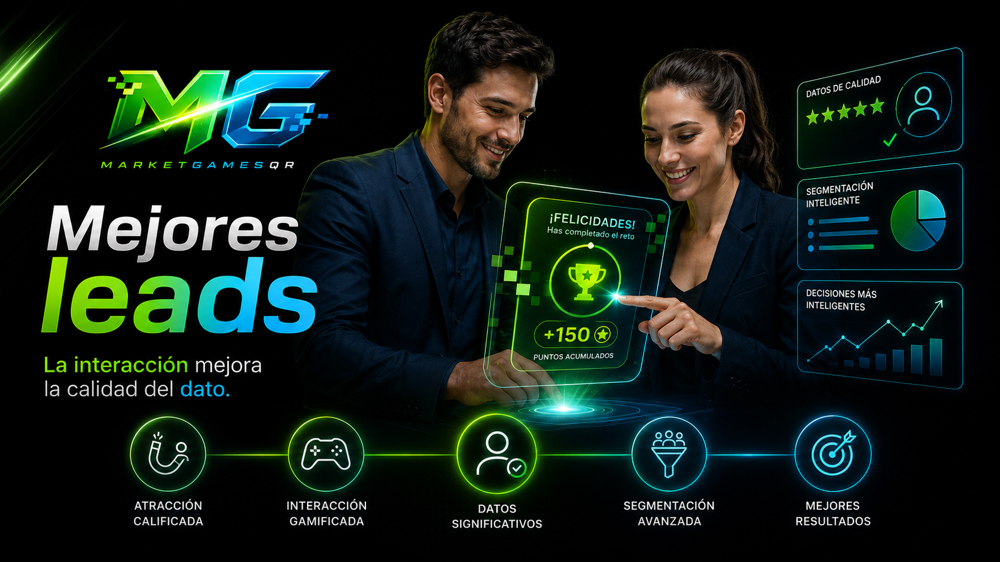
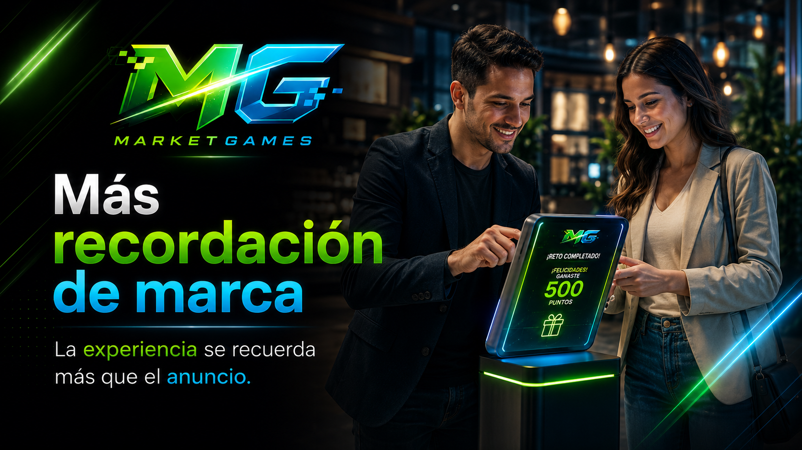
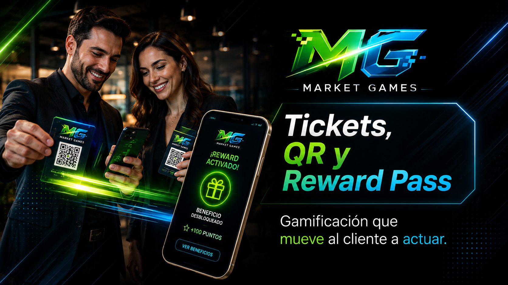
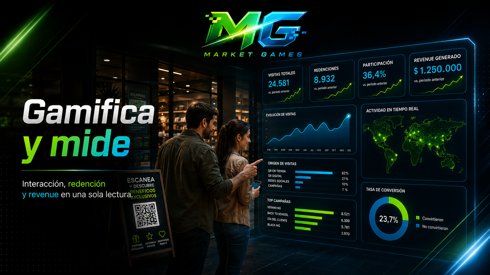
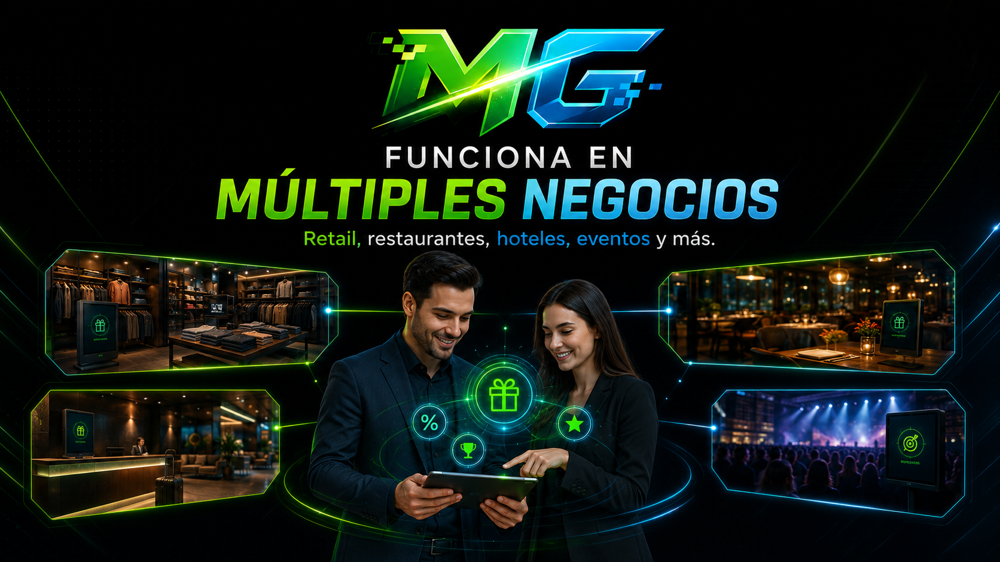
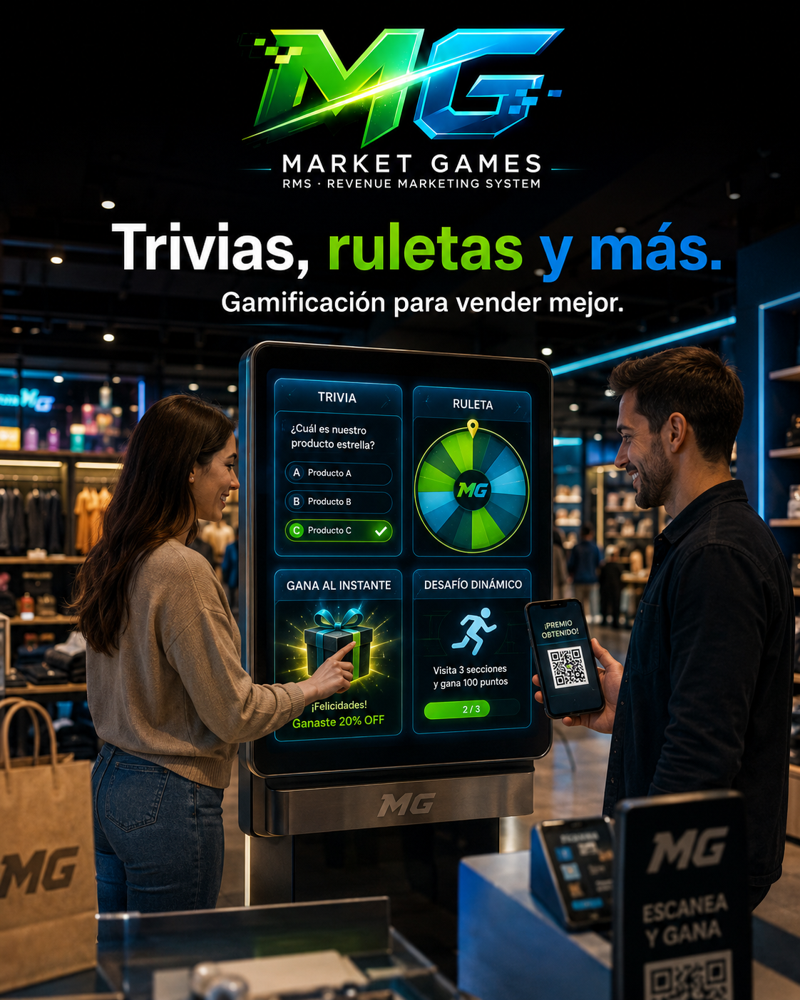

Portal gamificado con núcleo RMS
Crea dinámicas que se juegan, se redimen y se miden
Market Games convierte una campaña en una experiencia interactiva con datos comerciales desde el primer escaneo.
Desde el Gaming Center puedes activar trivias, ruletas, encuestas, retos, raspas digitales, tickets QR, reward pass y programas de afiliados sin perder la medición de leads, redenciones, ventas y revenue.
La gamificación atrae participación. El RMS ordena la evidencia para saber qué dinámica, canal, sede o referido produjo resultado.
No hagas promociones planas. Lanza experiencias de vanguardia con medición real.
Gaming Center + QR + Reward Pass + RMS.


¿Qué es Market Games?
Un portal para convertir campañas en juegos medibles.
Market Games une creatividad, activación y medición en un solo sistema: las marcas lanzan dinámicas gamificadas, capturan participación real y leen resultados comerciales desde el RMS.
Tu marca deja de publicar anuncios sueltos y empieza a operar experiencias que se juegan, se reclaman, se validan y se vuelven datos útiles.

Gaming Center
Escoge dinámicas de vanguardia listas para lanzar por campaña.
Activación QR
Conecta vitrinas, tickets, mostradores, ferias, empaques y redes.
Experiencias jugables
Trivias, ruletas, retos, raspas, encuestas y juegos rápidos.
Beneficios redimibles
Reward Pass, tickets, premios, afiliados y recompensas con control.
Medición RMS
Lee participación, redenciones, leads, ventas, referidos y revenue.
Decisión comercial
Compara dinámicas, canales y sedes para repetir lo que sí funciona.
Portal Market Games
El núcleo operativo donde la gamificación se vuelve medición
El portal no es una página estática. Es un centro de mando para crear campañas, elegir dinámicas, emitir QR, activar afiliados, validar beneficios y leer resultados comerciales.

Gaming Center
Dinámicas listas para marcas que quieren participación real
Trivia, pregunta abierta, encuesta, gira y descubre, selector de estilo, raspa digital, toca y revela, culebrita, atrapa premio y más mecánicas para campañas modernas.

RMS Dashboard
Medición para defender la campaña con datos
Revenue por canal, redenciones, ventas, referidos, flujo de atribución y network graph para entender qué produjo resultado.

Afiliados y Reward Pass
Clientes, aliados y vendedores como canales medibles
Carnets, QR, puntos, beneficios y tickets para transformar recomendación y recompra en señales comerciales verificables.
El nuevo marketing
No basta con llamar la atención
Durante años, el marketing se concentró en conseguir atención. Hoy la atención sigue siendo importante, pero ya no basta. Las marcas necesitan que las personas participen, respondan, escaneen, jueguen, rediman, visiten, compren y vuelvan con datos que expliquen el resultado.
Marketing tradicional
- Publicaciones planas.
- Promociones difíciles de medir.
- Volantes sin trazabilidad.
- Atención pasiva.
- Datos dispersos.
Marketing gamificado
- Experiencias interactivas.
- Participación activa.
- Leads con más contexto.
- Redenciones medibles.
- Revenue atribuible.
Una publicación se mira. Una experiencia se vive, se recuerda y se mide.
Marketing gamificado
Convierte tu marca en una experiencia
El marketing gamificado usa dinámicas de juego para que el cliente actúe: responde, gira, descubre, raspa, escanea, reclama, comparte, redime o compra. Market Games convierte esas acciones en medición.
Trivia de marca
Pregunta, segmenta y entrega QR solo cuando hay interacción.
Gira y descubre
Convierte curiosidad en visita, beneficio y redención.
Raspa digital
Premios sorpresa con una mecánica rápida para ferias y tiendas.
Retos y misiones
Acciones por etapas para permanencia, recompra y fidelización.
Tickets QR
Conecta piezas físicas con experiencias digitales.
Reward Pass
Beneficios digitales para activar recompra.
Gift cards
Incentivos para referidos, recompra y fidelización.
Puntos y niveles
Progreso visible para aumentar permanencia y frecuencia.
Beneficios sorpresa
Promociones memorables, controladas y fáciles de validar.
Referidos con premio
Convierte clientes activos en canal de recomendación medible.


Activaciones físicas
Del punto físico a la interacción digital
Market Games permite convertir vitrinas, mostradores, ferias, restaurantes, hoteles, tiendas, eventos y puntos de venta en espacios de interacción digital.
Vitrina interactiva
QR en mostrador
Dinámica en caja
Campaña por vendedor
Activación en feria
Reward Pass postventa
Referidos físicos
Tickets por sede
Campañas por temporada
Cada punto físico puede convertirse en una oportunidad digital de venta medible.
Beneficios
Más interacción. Más cercanía. Mejores datos.
Cuando el cliente participa, la marca se recuerda más.
Leads de más calidad
Porque interactúan de verdad.
Un lead que juega, responde, escanea, reclama o redime deja más información que un simple clic. Market Games ayuda a conocer mejor el interés, el canal, la intención, el beneficio elegido y el comportamiento del cliente.
No se trata solo de capturar más leads. Se trata de entender mejor a quienes interactúan con tu marca.
Market Games RMS
RMS: Revenue Marketing System
Gamificación al frente. Medición inteligente detrás.
Market Games no solo permite crear experiencias: también mide qué dinámica se jugó, desde qué canal llegó el cliente, qué beneficio reclamó, quién lo refirió, dónde se redimió y qué venta produjo.
El RMS convierte participación en indicadores comerciales: leads, redenciones, ventas atribuidas, recompra, referidos y revenue.

Campaña
Dinámica
QR
Lead
Redención
Venta
Revenue
La gamificación crea interacción. El RMS revela qué interacción generó valor.
Sectores
Diseñado para negocios que viven en el mundo real
Restaurantes
Trivias, reservas, recompra y beneficios por visita.

Hoteles
Reward Pass, experiencias para huéspedes y alianzas.

Tiendas
Vitrinas interactivas, tickets QR y campañas por producto.

Ferias
Captura leads, activa visitantes y mide ventas postevento.

Academias
Retos, inscripciones, referidos y seguimiento por interés.

Servicios
Referidos, beneficios, validación y seguimiento comercial.
Gimnasios
Retos, asistencia, referidos y permanencia.
Belleza
Fidelización, agenda, puntos y beneficios.
Eventos
Tickets, dinámicas, rewards y medición de asistentes.
Retail
Campañas por sede, vendedor, temporada y canal.
Centros comerciales
Activaciones por local, zona, fecha y tráfico.
Marcas con punto físico
Experiencias de recordación, redención y revenue.
Galería visual
El portal y las campañas en acción








Video institucional
Conoce cómo funciona Market Games
Una mirada rápida al ecosistema que convierte campañas físicas y digitales en experiencias interactivas, beneficios redimibles y medición RMS.
Crear campañas
Activar clientes
Entregar beneficios
Validar tickets
Medir revenue
Ver más experiencias
Recursos
Recursos para entender el portal y el RMS
Consulta el documento técnico y comercial que explica cómo un Revenue Marketing System conecta campañas gamificadas, QR, redenciones, afiliados, ventas y revenue en una sola lectura.

Documento RMS
Market Games RMS: documento técnico y comercial
Una guía para entender la categoría Revenue Marketing System, sus módulos, sus casos de uso y la forma en que mide participación, redenciones, ventas y revenue.
Abrir documento RMSContacto
Lanza campañas que tus clientes quieran jugar y tu negocio pueda medir
Market Games te ayuda a pasar de promociones planas a un portal gamificado con dinámicas de vanguardia, beneficios redimibles y medición comercial.
Crea. Juega. Redime. Mide. Crece.